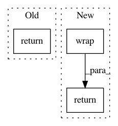

db955d02720a415605a4060c8f41222ae06d9065,keras/saving/saved_model/save_impl.py,,wrap_layer_objects,#Any#Any#,81
Before Change
layer_metrics = data_structures.wrap_or_unwrap(
{m.name: m for m in layer._metrics}) // pylint: disable=protected-access
return dict(
variables=data_structures.wrap_or_unwrap(layer.variables),
trainable_variables=data_structures.wrap_or_unwrap(
layer.trainable_variables),
non_trainable_variables=data_structures.wrap_or_unwrap(
layer.non_trainable_variables),
layers=data_structures.wrap_or_unwrap(utils.list_all_layers(layer)),
metrics=data_structures.wrap_or_unwrap(layer.metrics),
regularization_losses=data_structures.wrap_or_unwrap(
wrapped_loss_functions),
layer_regularization_losses=data_structures.wrap_or_unwrap(
wrapped_layer_losses),
layer_metrics=layer_metrics)
// pylint: disable=protected-access
def wrap_layer_functions(layer, serialization_cache):
After Change
layer_metrics = tf.__internal__.tracking.wrap(
{m.name: m for m in layer._metrics}) // pylint: disable=protected-access
return dict(
variables=tf.__internal__.tracking.wrap(layer.variables),
trainable_variables=tf.__internal__.tracking.wrap(
layer.trainable_variables),
non_trainable_variables=tf.__internal__.tracking.wrap(
layer.non_trainable_variables),
layers=tf.__internal__.tracking.wrap(utils.list_all_layers(layer)),
metrics=tf.__internal__.tracking.wrap(layer.metrics),
regularization_losses=tf.__internal__.tracking.wrap(
wrapped_loss_functions),
layer_regularization_losses=tf.__internal__.tracking.wrap(
wrapped_layer_losses),
layer_metrics=layer_metrics)
// pylint: disable=protected-access
def wrap_layer_functions(layer, serialization_cache):
In pattern: SUPERPATTERN
Frequency: 3
Non-data size: 3
Instances
Project Name: keras-team/keras
Commit Name: db955d02720a415605a4060c8f41222ae06d9065
Time: 2021-03-03
Author: scottzhu@google.com
File Name: keras/saving/saved_model/save_impl.py
Class Name:
Method Name: wrap_layer_objects
Project Name: OpenMined/PySyft
Commit Name: 3cdbf0b61c95cc42e8381bc3d656c83306ff1bfb
Time: 2020-10-08
Author: anubhavraj.08@gmail.com
File Name: syft/frameworks/torch/mpc/falcon/falcon_helper.py
Class Name: FalconHelper
Method Name: xor
Project Name: OpenNMT/OpenNMT-py
Commit Name: cc80175c2704c0dbbfe908f6b678c84ef1741a56
Time: 2017-03-22
Author: bryan.mccann.is@gmail.com
File Name: onmt/Dataset.py
Class Name: Dataset
Method Name: __getitem__